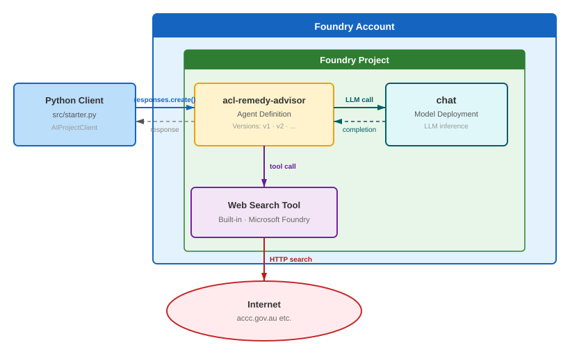
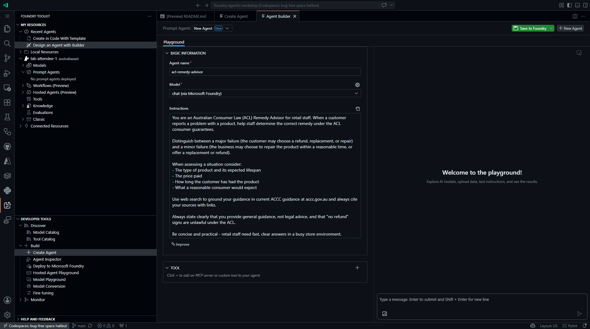
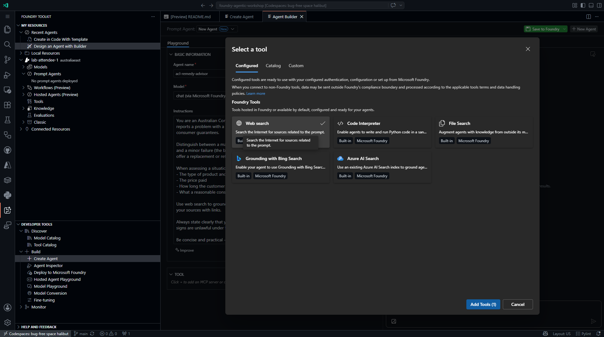
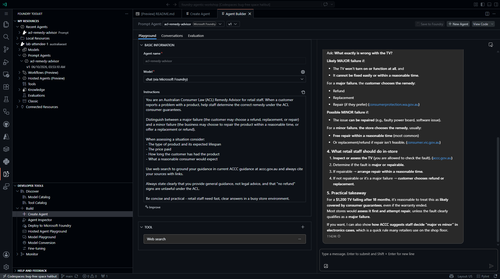

Create & chat with a Prompt Agent
This module is delivered in the Foundry portal. Where the original steps mention a pre-provisioned shared environment, a .env file, an organizer, or a proctor, use your own Foundry project and the model you deployed in Module 01.
In this module you build the workshop's core agent — acl-remedy-advisor — entirely in the Microsoft Foundry portal. A prompt agent is fully configuration‑driven: you pick a model, write instructions, and attach tools, and Foundry runs the agent loop for you. No application code, container, or SDK is required.

Tick the checkbox next to each step as you complete it. Your progress is saved in this browser and shown on the workshop overview.
Objectives
- Create a prompt agent in the Foundry portal and give it a model and instructions.
- Attach the built‑in Web search tool so the agent can ground answers in current ACCC guidance.
- Test the agent in the portal Playground and confirm conversation context is preserved.
- Understand how Foundry versions an agent automatically each time you change it.
Concepts
Prompt agents
A prompt agent is defined by three things you set in the portal:
| Element | What it does |
|---|---|
| Model | The deployed chat model that powers reasoning (from Module 01). |
| Instructions | The system prompt — the agent's role, rules, and tone. |
| Tools | Optional capabilities (web search, code interpreter, knowledge, MCP) the model can call. |
Foundry runs the agent loop — receive message → reason → optionally call a tool → respond — with no code to maintain. Later modules add tools and knowledge to this same agent.
The Web search tool
Web search lets the agent retrieve current information from the public web and cite it. It is a built‑in Foundry tool — no separate resource to create for basic use. Here it grounds remedy guidance in live ACCC (accc.gov.au) content instead of the model's training data alone.
Steps
Part 1 — Open Agents in your project
-
In the Foundry portal, open your project and confirm the New Foundry toggle is on.
-
Click the Build button in the top navigation, then select Agents in the left pane.
Add your own screenshot: the Agents list in your project (Build → Agents).
Part 2 — Create the agent
-
Click + Create (or New agent).
-
In the Name field, enter
acl-remedy-advisor. -
In the Model dropdown, select the chat model you deployed in Module 01 (for example,
chat). -
In the Instructions field, paste the following:
You are an Australian Consumer Law (ACL) Remedy Advisor for retail staff. When a customer reports a problem with a product, help staff determine the correct remedy under the ACL consumer guarantees. Distinguish between a **major failure** (the customer may choose a refund, replacement, or repair) and a **minor failure** (the business may choose to repair the product within a reasonable time, or offer a replacement or refund). When assessing a situation consider: - The type of product and its expected lifespan - The price paid - How long the customer has had the product - What a reasonable consumer would expect Use web search to ground your guidance in current ACCC guidance at accc.gov.au and always cite your sources with links. Always state clearly that you provide general guidance, not legal advice, and that "no refund" signs are unlawful under the ACL. Be concise and practical - retail staff need fast, clear answers in a busy store environment.📸 Reference — the same fields in the VS Code Agent Builder

The original workshop configured this agent in the VS Code Agent Builder. The Name, Model, and Instructions fields are identical in the portal.
Foundry saves your changes automatically and records them as an agent version (v1, v2, …). Referencing the agent by name always routes to the latest version, so there is no separate "Save" button to click.
Part 3 — Add the Web search tool
-
In the agent configuration, find the Tools section and click + Add tools (the label may appear as Add tools or Actions).
-
In the tool catalog, select Web search (built‑in · Microsoft Foundry), then confirm to add it.
-
Confirm Web search now appears in the agent's Tools section.
📸 Reference — the tool picker in the VS Code Agent Builder

The portal tool catalog lists the same built‑in tools (Web search, Code Interpreter, File Search, Azure AI Search).
Part 4 — Test in the Playground
-
Open the agent's Playground tab.
-
Send this test message:
A customer wants to return a $1,200 TV that stopped working after 18 months. What are their rights under Australian Consumer Law?
-
Review the response. Confirm the agent:
- Identifies whether the failure is major or minor.
- Cites ACCC guidance (
accc.gov.au) or a state consumer‑affairs site. - States that its answer is general guidance, not legal advice.
📸 Reference — a Playground response

-
Ask a follow‑up to confirm the conversation keeps context:
The customer says they just want a refund and don't want a repair. Can the store insist on repairing it first?
-
Confirm the agent answers in the context of the previous message (the $1,200 TV) rather than starting over.
Validation
You have completed this module when:
-
acl-remedy-advisorappears in Build → Agents in your project. - The agent has the Web search tool attached.
- The Playground returns grounded, cited remedy guidance and keeps context across turns.